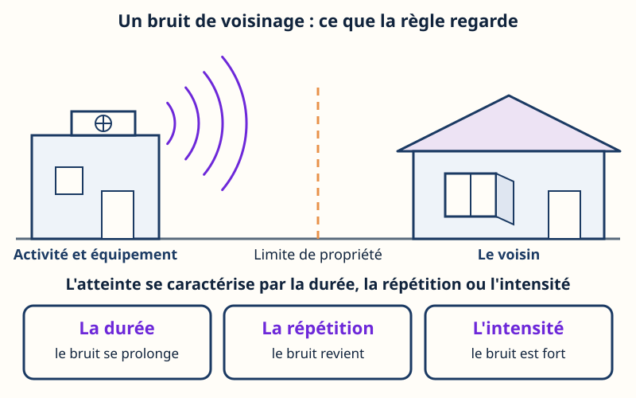
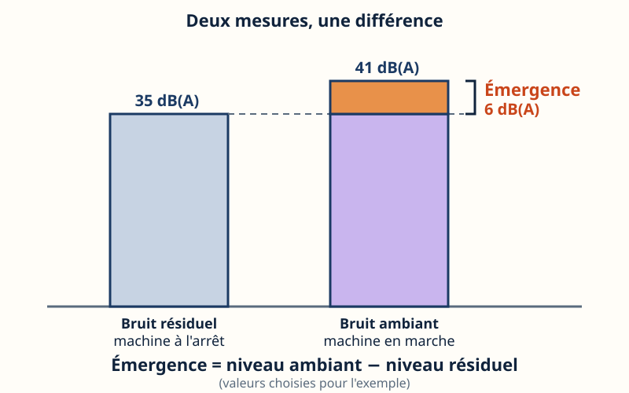
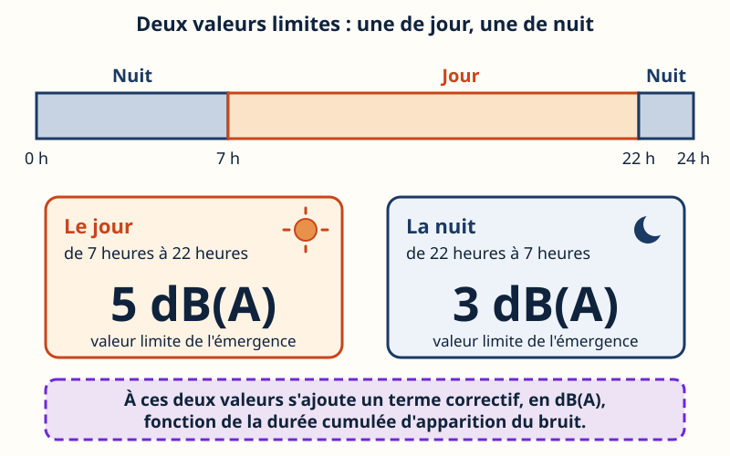
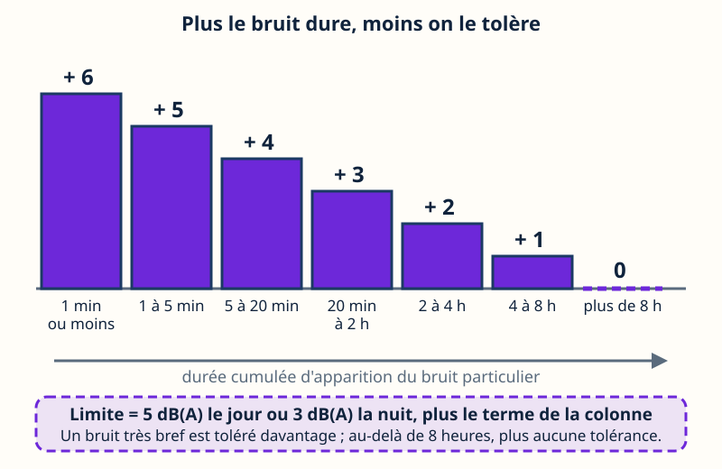
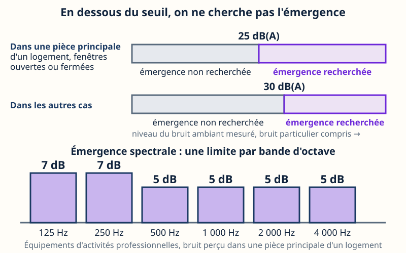
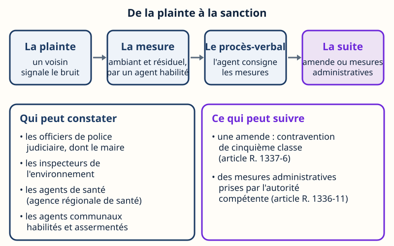
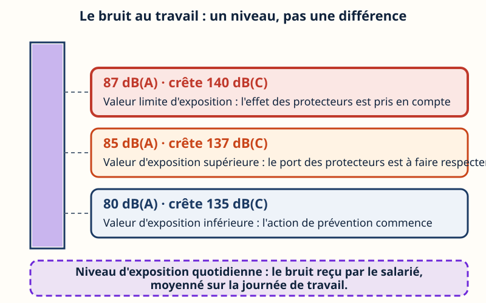
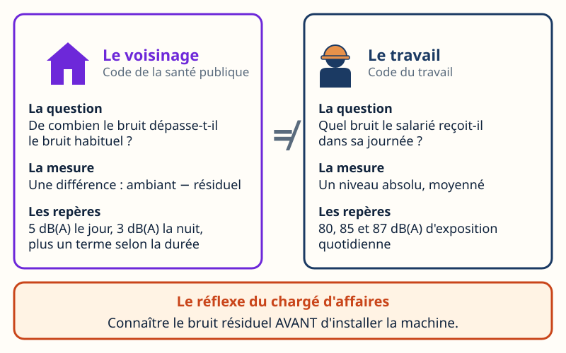

Acoustique · niveau BTS
Les seuils — voisinage, émergence
Mini-station commentée · 8 écrans et 4 questions · environ 10 minutes

À la fin de la station, vous savez définir l'émergence, lire les valeurs limites de jour et de nuit avec leur terme correctif, dire quand l'émergence n'est pas recherchée, nommer ceux qui constatent et ce qui peut suivre — et situer le bruit au travail, qui obéit à d'autres repères.
TP Technicien d'études en CVC (REAC TP-00133) : CP9 (climatisation) et CP7 (ventilation tertiaire) — le groupe froid, la pompe à chaleur ou le ventilateur que vous prescrivez est un équipement d'activité professionnelle que ce texte encadre. La partie « bruit au travail » relève de la culture professionnelle du technicien et du chargé d'affaires, hors REAC.
Chaque écran peut être expliqué à voix haute : le bouton « Écouter » commente ce que vous voyez. Rien n'est dit qui ne soit aussi écrit.
Écran 1 sur 8
Un bruit ne doit pas gêner le voisin
Le Code de la santé publique pose le principe à l'article R. 1336-5 : aucun bruit particulier ne doit, par sa durée, sa répétition ou son intensité, porter atteinte à la tranquillité du voisinage ou à la santé de l'homme, dans un lieu public ou privé. On en répond qu'on soit soi-même à l'origine du bruit, ou par une personne, une chose dont on a la garde, ou un animal.
Le critère chiffré de l'émergence (écrans suivants) est prévu, à l'article R. 1336-6, pour le bruit d'une activité professionnelle (hors chantier), sportive, culturelle ou de loisir, organisée de façon habituelle ou soumise à autorisation. Les autres bruits particuliers restent jugés sur la durée, la répétition ou l'intensité.
L'article R. 1336-4 exclut notamment les infrastructures de transport et les véhicules qui y circulent, les aéronefs, les installations nucléaires de base et les installations classées pour la protection de l'environnement (ICPE). Un chantier relève de l'article R. 1336-10 : pas de seuil chiffré, mais le non-respect des conditions fixées, l'insuffisance de précautions ou un comportement anormalement bruyant.

Écran 2 sur 8
L'émergence : deux mesures, une différence
L'article R. 1336-7 définit l'émergence globale comme la différence entre :
- le niveau de bruit ambiant, comportant le bruit particulier en cause (la machine en marche) ;
- le niveau du bruit résiduel, constitué par l'ensemble des bruits habituels, extérieurs et intérieurs, correspondant à l'occupation normale des locaux et au fonctionnement habituel des équipements, en l'absence du bruit particulier en cause (la machine à l'arrêt).
Émergence = niveau ambiant − niveau résiduel (en dB(A))
Confondre émergence et niveau : une machine peut être « peu bruyante » en valeur absolue et dépasser la limite dans un lieu très calme, parce que c'est l'écart avec le bruit habituel qui est jugé. Les niveaux de l'illustration (35 et 41 dB(A)) sont des chiffres d'exemple, pas des valeurs réglementaires.

Écran 3 sur 8
Les valeurs limites : cinq le jour, trois la nuit
Toujours à l'article R. 1336-7 : les valeurs limites de l'émergence sont de 5 décibels pondérés A en période diurne (de 7 heures à 22 heures) et de 3 décibels pondérés A en période nocturne (de 22 heures à 7 heures).
Ces valeurs sont le point de départ : le texte précise qu'un terme correctif, fonction de la durée cumulée d'apparition du bruit particulier, s'y ajoute (écran suivant).
Le décibel pondéré A, noté dB(A), est l'unité de niveau qui tient compte de la sensibilité de l'oreille. L'émergence s'exprime donc en dB(A) : c'est un écart entre deux niveaux, pas un niveau.

Écran 4 sur 8
Le terme correctif : plus le bruit dure, moins on le tolère
Le terme correctif de l'article R. 1336-7 dépend de la durée cumulée d'apparition du bruit particulier :
| Durée cumulée d'apparition | Terme à ajouter |
|---|---|
| 1 minute ou moins | 6 dB(A) |
| plus de 1 minute, jusqu'à 5 minutes | 5 dB(A) |
| plus de 5 minutes, jusqu'à 20 minutes | 4 dB(A) |
| plus de 20 minutes, jusqu'à 2 heures | 3 dB(A) |
| plus de 2 heures, jusqu'à 4 heures | 2 dB(A) |
| plus de 4 heures, jusqu'à 8 heures | 1 dB(A) |
| plus de 8 heures | 0 dB(A) |
Limite = 5 (jour) ou 3 (nuit) + terme correctif
Deux lectures : de jour, pour un bruit d'une minute ou moins, 5 + 6 = 11 dB(A) ; de nuit, pour un groupe qui tourne plus de huit heures, 3 + 0 = 3 dB(A) — le cas le plus sévère.

Écran 5 sur 8
Le seuil d'application et l'émergence spectrale
Le seuil. Selon l'article R. 1336-6, l'émergence n'est recherchée que si le niveau de bruit ambiant mesuré, bruit particulier compris, est supérieur à 25 dB(A) quand la mesure est faite à l'intérieur des pièces principales d'un logement (fenêtres ouvertes ou fermées), ou à 30 dB(A) dans les autres cas. En dessous, on ne cherche pas.
L'émergence spectrale. Quand le bruit est engendré par des équipements d'activités professionnelles et perçu dans les pièces principales d'un logement, l'atteinte est aussi caractérisée si l'émergence spectrale dépasse ses limites (article R. 1336-8). Elle se calcule comme l'émergence globale, mais par bande d'octave — une tranche de fréquences — normalisée :
- 7 dB dans les bandes centrées sur 125 Hz et 250 Hz ;
- 5 dB dans les bandes centrées sur 500 Hz, 1 000 Hz, 2 000 Hz et 4 000 Hz.
Pour un technicien d'études, c'est la ligne qui vise un ventilateur ou un compresseur dont le ronflement grave passe dans la cloison.

Écran 6 sur 8
Qui constate, et ce qui peut suivre
La mesure. L'article R. 1336-9 renvoie les modalités de mesure à un arrêté (arrêté du 5 décembre 2006 relatif aux modalités de mesurage des bruits de voisinage), qui s'appuie sur la norme NF S 31-010 (caractérisation et mesurage des bruits de l'environnement). C'est ce qui rend indispensable la mesure des deux niveaux, avec et sans la machine.
Qui constate. Des agents de l'État — officiers et agents de police judiciaire, dont les maires, inspecteurs de l'environnement, agents de santé — et des agents communaux habilités et assermentés (article R. 1337-10-2 ; article L. 571-18 du Code de l'environnement). Ils consignent leurs constats dans un procès-verbal.
Ce qui peut suivre. Pour une activité professionnelle qui dépasse les valeurs limites de l'émergence globale ou spectrale, l'article R. 1337-6 prévoit une amende de contravention de la cinquième classe. Les autres bruits particuliers relèvent de l'article R. 1337-7 (troisième classe). Indépendamment de cela, l'autorité administrative compétente peut prendre des mesures (article R. 1336-11, qui renvoie à l'article L. 171-8 du Code de l'environnement).

Écran 7 sur 8
Le bruit au travail : trois valeurs d'exposition
Le Code du travail ne parle pas d'émergence. L'article R. 4431-2 fixe des valeurs pour le niveau d'exposition quotidienne au bruit (rapporté à une journée nominale de 8 heures de travail) ou pour le niveau de pression acoustique de crête (mesuré en pondération C) :
- valeurs d'exposition inférieures, qui déclenchent l'action de prévention : 80 dB(A) ou 135 dB(C) de crête ;
- valeurs d'exposition supérieures, qui déclenchent l'action de prévention : 85 dB(A) ou 137 dB(C) de crête ;
- valeurs limites d'exposition : 87 dB(A) ou 140 dB(C) de crête.
Pour la valeur limite, l'exposition effective prend en compte l'atténuation des protecteurs auditifs portés ; les valeurs qui déclenchent l'action n'en tiennent pas compte.
Ce que doit faire l'employeur : évaluer et, si nécessaire, mesurer les niveaux de bruit (article R. 4433-1) ; réduire au minimum les risques (R. 4432-1) ; mettre des protecteurs individuels à disposition au-delà des valeurs inférieures, et veiller à ce qu'ils soient effectivement utilisés quand les valeurs supérieures sont atteintes (R. 4434-7).

Écran 8 sur 8
Bilan et le réflexe
- Voisinage : l'émergence est la différence entre le bruit ambiant et le bruit résiduel.
- Limites : 5 dB(A) le jour, 3 dB(A) la nuit, plus un terme correctif de 6 à 0 selon la durée.
- Pas de recherche sous 25 dB(A) dans un logement, 30 dB(A) ailleurs ; pour un équipement professionnel, l'émergence spectrale s'y ajoute.
- Des agents habilités constatent ; le procès-verbal s'appuie sur les mesures ; sanction : contravention, et mesures administratives.
- Travail : 80, 85, 87 dB(A) d'exposition quotidienne — un niveau, pas une différence.
Le réflexe : connaître le bruit résiduel avant d'installer la machine.
Pourquoi : c'est le bruit résiduel qui fixe ce que la machine pourra faire entendre, puisque l'émergence se compte à partir de lui.

Question 1 sur 4
44 dB(A) machine en marche, 37 dB(A) à l'arrêt : quelle émergence ?
Question 2 sur 4
Un groupe tourne toute la nuit, plus de huit heures d'affilée : quelle limite ?
Question 3 sur 4
24 dB(A) mesurés dans une chambre, fenêtres fermées : que dit la règle ?
Question 4 sur 4
Un salarié est exposé à 86 dB(A) par jour : que retenir ?
Les correspondances de la station
- Le bruit en dB (même sous-ligne) — le décibel, la pondération A, et pourquoi on n'additionne pas deux niveaux comme deux nombres.
- Mesurer (même sous-ligne) — comment relever le bruit ambiant et le bruit résiduel avec un sonomètre.
- PAC & voisinage (même sous-ligne) — l'unité extérieure d'une pompe à chaleur, cas d'application de ces seuils.
- Le DUERP (Risques professionnels) — le bruit au travail est un risque à évaluer et à consigner.